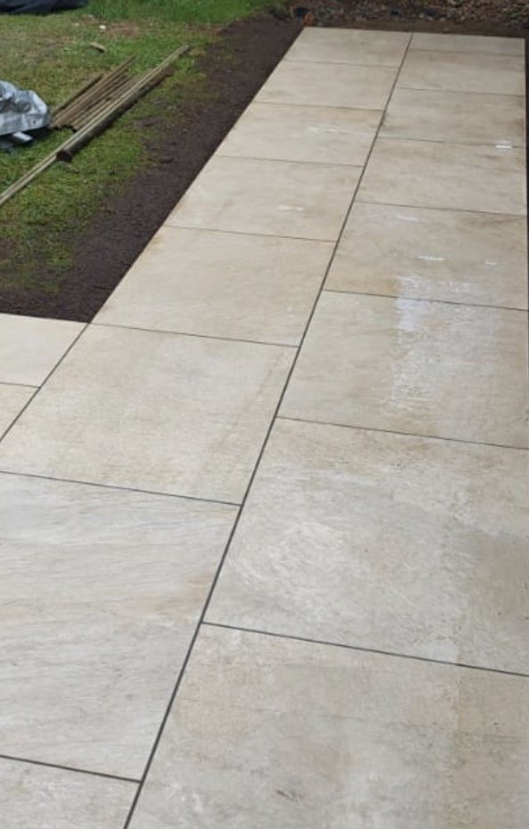

Porcelain patio, Stamford
A light, large-format porcelain patio outside the bifold doors of a house in Stamford, carried round the side of the house as a path.
A light large-format porcelain patio laid in a broken bond outside the bifold doors of a house in Stamford, continuing round the side of the house as a path, with a recessed tray cover over the inspection chamber.
- Where
- Stamford, Lincolnshire (PE9)
- Work
- Patio and side path
- Finish
- Light large-format porcelain, broken bond, narrow joints
- Details
- Recessed tray manhole cover
Real photos from the finished job, taken by us. House numbers, number plates and anything identifying have been blurred.
The brief
Bifold doors open straight onto this patio, so the paving had to work as an extension of the room inside: light in colour, large in format, and calm enough not to compete with the garden.
What we built
The patio is a light, large-format porcelain laid in a broken bond, with narrow, even joints that let the size of the slabs show. It wraps round the corner of the house and continues as a path along the side, running straight against the wall.
An inspection chamber in the middle of the patio has a recessed tray cover with porcelain fitted into it, so access is kept without a steel lid in the middle of the paving. Porcelain absorbs almost no water, so it resists the algae and green staining that sandstone picks up on shadier patios, and it cleans with a brush and water.
More from this job

Other recent jobs

Block paved driveway and dropped kerb, Ryhall
Slabs and an old crossing replaced with a three-car block drive, channel drain and wider dropped kerb.

Charcoal block paved driveway, Oakham
A full-width charcoal herringbone drive with channel drains, built after a garage conversion at the same house.

Buff herringbone driveway, Oakham
An extra space beside a townhouse drive, in buff herringbone with a charcoal double border.
Rated 5.0 from 37 Google reviews
“Lewis and his team done my porcelain patio for me. Attention to detail was great, would recommend”
Ervin · Porcelain patio — Google review
“Lewis transformed my garden from a muddy bog and but in drainage and a Beautiful porcelain patio. All the tradesmen worked hard and were very conscientious. Couldn't recommend more!!!!”
Peter · Garden drainage and porcelain patio — Google review
Want something like this at yours?
We measure up, check levels and drainage, and send a written proposal with the build-up, the programme and one whole price. No pressure and no follow-up sales calls.